How to practise
Draw each diagram in DrawIO, the tool the tests use, and save it as a .xml file. Put each object diagram on its own page of the file. Then open the solution and compare shape by shape.
Assumed
The tasks use the School, list and circular list programs from the Theory page. These programs are made up for practice; the task forms come from the 2026 tests and Practical 2.
Drawing tasks
Flowchart from a class diagram (DrawIO)
Task 1: the School assignment operator
Draw the flowchart of the School assignment operator, operator=(other: const School&): School&. No code is given: use the class diagram and the description.
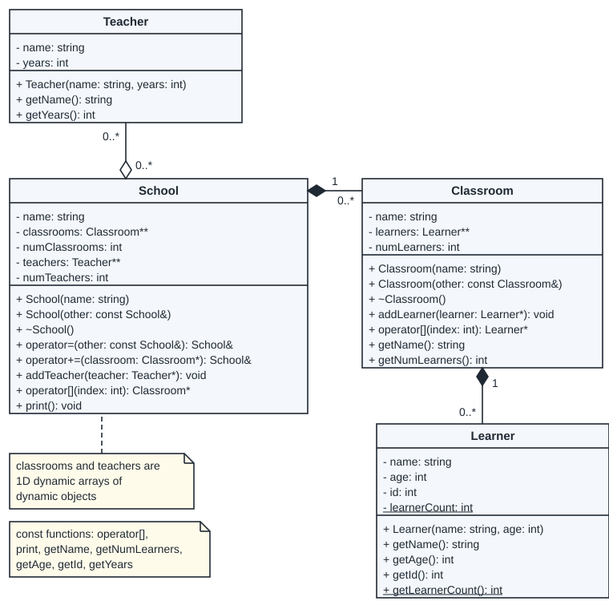
A school owns its classrooms (filled diamond): it makes each Classroom and deletes it, and each Classroom owns its learners. The school only stores pointers to its teachers (hollow diamond): the Teacher objects are made in main. numClassrooms and numTeachers are the sizes of the two arrays. After a = b, school a must have its own copy of every classroom of b, the same teachers as b, and no leaked memory.
Hint: Decide first which array gets new objects and which gets copied pointers.
Write this before you open the solution.
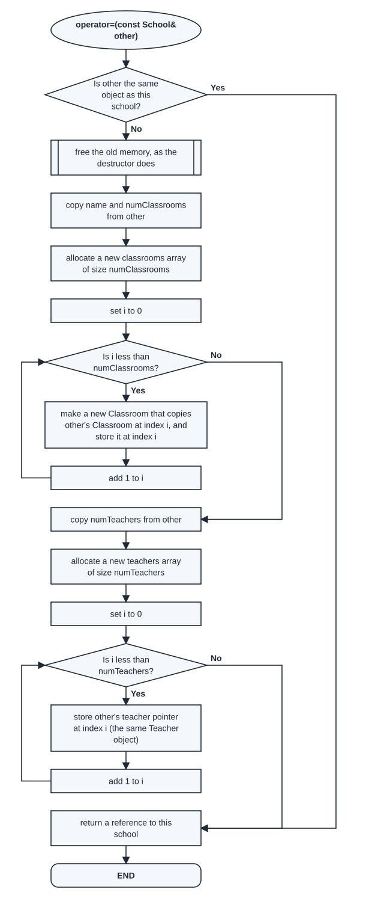
| Condition | True means | False means |
|---|---|---|
this == &other | a = a: nothing to copy, return at once | copy other into this school |
i < numClassrooms | classroom i still needs a new copy | all classrooms copied: go on to the teachers |
i < numTeachers | teacher pointer i still needs copying | all copied: return |
It has the same shape as the Festival chart in Example 1 on the Examples page. Take a school a with one classroom and one teacher, and an empty school b. An instrumented copy of the operator ran b = a and then b = b:
| Assignment | Same object? | Classroom loop passes | Teacher loop passes |
|---|---|---|---|
b = a | No | 1 | 1 |
b = b | Yes | 0 | 0 |
The passes of b = a, one by one:
| Loop | i | Is i less than the size (1)? | What happens |
|---|---|---|---|
| classrooms | 0 | Yes | make a new Classroom that copies a.classrooms[0] (with its learners); store it in b.classrooms[0] |
| classrooms | 1 | No | leave the loop |
| teachers | 0 | Yes | store the pointer a.teachers[0] in b.teachers[0]: the same Teacher object |
| teachers | 1 | No | leave the loop |
Check your chart against the code:
School& School::operator=(const School& other) {
if (this == &other)
return *this;
for (int i = 0; i < numClassrooms; i++)
delete classrooms[i];
delete[] classrooms;
delete[] teachers;
name = other.name;
numClassrooms = other.numClassrooms;
classrooms = new Classroom*[numClassrooms];
for (int i = 0; i < numClassrooms; i++)
classrooms[i] = new Classroom(*other.classrooms[i]);
numTeachers = other.numTeachers;
teachers = new Teacher*[numTeachers];
for (int i = 0; i < numTeachers; i++)
teachers[i] = other.teachers[i];
return *this;
}Objects after a line (DrawIO), one diagram per page
Task 2: the School objects after line 8
Use the School classes of Task 1 and this program. Draw every object that exists after line 8 on page 1 of a DrawIO file. On page 2 of the same file, draw every object that exists after line 6.
#include <iostream>
#include "School.h"
using namespace std;
int main() {
Teacher mrsDube("Mrs Dube", 12); // line 1
Teacher mrNel("Mr Nel", 3); // line 2
School s("Hillview"); // line 3
s += new Classroom("A1"); // line 4
s[0]->addLearner(new Learner("Thabo", 14)); // line 5
s[0]->addLearner(new Learner("Ana", 13)); // line 6
s += new Classroom("B2"); // line 7
s.addTeacher(&mrsDube); // line 8
s[1]->addLearner(new Learner("Lebo", 15)); // line 9
s.addTeacher(&mrNel); // line 10
cout << "Learner count: " << Learner::getLearnerCount() << endl; // line 11
s.print(); // line 12
return 0;
}Hint: Go through the lines one by one and stop after line 8.
Write this before you open the solution.
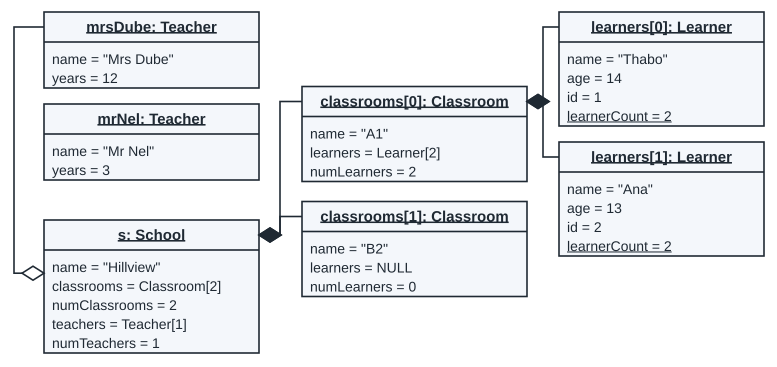
Classroom B2 has no learner yet (Lebo is added on line 9), so learners = NULL. Mr Nel exists but is not linked: line 10 adds him. learnerCount is 2.
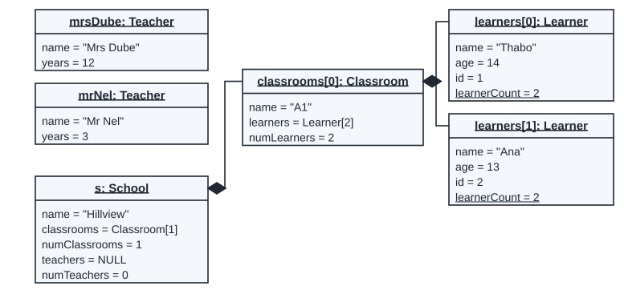
Memory diagram (DrawIO)
Task 3: the circular list after two appends
A circular list keeps only tail. The next of the last node points back to the first node, so the list has no NULL at the end. Draw the memory diagram of this circular list after the second pass of the loop (i = 2).
class Node {
private:
int data;
Node* next;
public:
Node(int data);
int& getData();
Node*& getNext();
};class CircularList {
private:
Node* tail;
public:
CircularList();
~CircularList();
CircularList& operator+=(int value);
void print() const;
};#include "CircularList.h"
int main() {
CircularList cl; // line 1
for (int i = 1; i <= 3; i++) // line 2
cl += i * 100; // line 3
cl.print(); // line 4
return 0;
}CircularList& CircularList::operator+=(int value) {
Node* node = new Node(value);
if (tail == NULL) {
node->getNext() = node;
tail = node;
return *this;
}
node->getNext() = tail->getNext();
tail->getNext() = node;
tail = node;
return *this;
}Hint: Where must the new node's next point, so that the list stays a circle?
Write this before you open the solution.
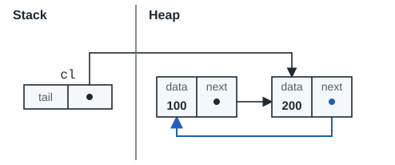
| Condition | True means | False means |
|---|---|---|
tail == NULL | the list is empty: the new node points at itself and becomes tail | link the new node in after tail |
On the second pass the list is not empty. The new node takes tail->getNext() (node 100) as its next, the old tail points at the new node, and tail moves to the new node.
Reading and checking tasks
Read an object diagram
Task 4: questions on the School diagram after line 10
This is the School diagram after line 10 of the program in Task 2:
![Object diagram after line 10. mrsDube: Teacher (name "Mrs Dube", years 12) and mrNel: Teacher (name "Mr Nel", years 3), each joined to s by a hollow diamond at s. s: School (name "Hillview", classrooms = Classroom[2], numClassrooms 2, teachers = Teacher[2], numTeachers 2). Filled diamonds from s to classrooms[0]: Classroom (A1, learners = Learner[2], 2) and classrooms[1]: Classroom (B2, learners = Learner[1], 1). A1 owns learners[0]: Learner (Thabo, 14, id 1) and learners[1]: Learner (Ana, 13, id 2); B2 owns learners[0]: Learner (Lebo, 15, id 3). Each Learner shows learnerCount = 3 underlined.](assets/diagrams/od_school_10_m.svg)
- How many Learner objects exist?
- Which objects does the School destructor delete?
- Which objects are still there after
sis destroyed, until main ends? - Why does every Learner box show the same
learnerCount?
Hint: A filled diamond means the owner deletes that object; a hollow diamond means it does not.
Write this before you open the solution.
- 3 (Thabo, Ana and Lebo).
- Both Classroom objects (each Classroom destructor deletes its learners), then the classrooms array and the teachers array.
mrsDubeandmrNel: they are local objects of main, joined with hollow diamonds, so the school does not delete them.learnerCountis static: there is one copy for the whole class, and its value is 3.
Find the error · memory
Task 5: a remove that reads freed memory
This version of remove ends with the last two lines in the other order:
Node* temp = prev->getNext();
delete temp;
prev->getNext() = temp->getNext();The list holds 10, 20, 30, 40, and the program calls ll.remove(20). prev stops at node 10 and temp gets node 20. These two pictures show memory in the correct version, before and after the relink line:
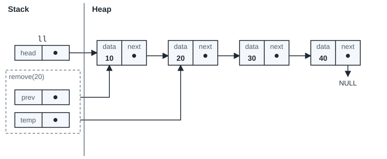
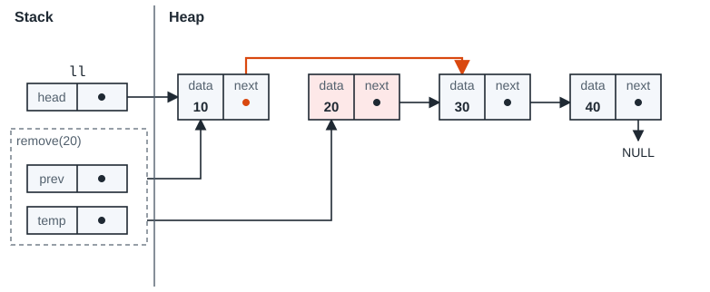
The program with the swapped lines still prints the right list. Use the two pictures to explain what is wrong.
Hint: Look at step 2 of the pictures: which arrow is read, and from which node?
Write this before you open the solution.
After delete temp; node 20 is gone, but temp still holds its address. The next line reads temp->getNext() from the deleted node. The list may still look right, because the old bytes are often still there, but the read is not allowed. valgrind reports it:
Invalid read of size 8 ERROR SUMMARY: 1 errors from 1 contexts (suppressed: 0 from 0)
The fix: relink first (prev->getNext() = temp->getNext();), then delete. That is step 2 of the pictures, before the delete.
Find the error · flowchart
Task 6: a destructor chart that frees too much
A School destructor flowchart has a loop that deletes each Teacher object, then deletes the teachers array. The program makes the teachers as local objects of main. What goes wrong, and what is the fix?
Hint: Look at the diamond between School and Teacher, and at how main makes the teachers.
Write this before you open the solution.
The school does not own the teachers (hollow diamond). They were not made with new, so deleting them is an invalid free. The same mistake in the Festival code (deleting each Sponsor) made valgrind report:
Invalid free() / delete / delete[] / realloc() Address 0x1fff000230 is on thread 1's stack
The fix: one box, "delete the teachers array only (the Teacher objects stay)".
From past papers
These are the diagram questions of the 2026 tests, and pointer and linked-list tracing questions from older exams, copied word for word. Each label gives the paper and the question number. Any given code or diagram is redrawn here. Parts of a scan that cannot be read are marked [unreadable in the source].
| Question | Source |
|---|---|
| Draw the flowchart for board | Class Test 1, 2026, question 4 |
| Flowchart for the LogisticCompany destructor | Class Test 2A, 2026, question 2 (5 marks) |
| Flowchart for the Client destructor | Logistics mock test, 2026, question 3 (5 marks) |
| Flowchart for the LogisticCompany destructor (mock) | Logistics mock test, 2026, question 4 (5 marks) |
| How many classes are in the object diagram? | Semester Test 1, 2026, question 3 (0.5 marks) |
| The class and its constructor, from Figure 3 and Figure 4 | Semester Test 1, 2026, questions 15 and 16 (3 marks each) |
| Flowchart for the Universe assignment operator | Semester Test 1, 2026, question 23 (7 marks) |
| Every object after line 13 | Semester Test 1, 2026, question 24 |
| The object diagram of arr | Semester Test 2, 2026, question 9(c) (5 marks) |
| The object diagram of ns | Class Test 3, 2026, question 2 |
| From a recursive flowchart to code | Intervention Test, 14 September 2026, question 2 |
| Connect each pointer to its value (2023) | EO1 2023, question 1.2 (2 marks) |
| Connect each pointer to its value (2024) | EO1 2024, question 1.1 (2 marks) |
| What does modify() do to the list? | EO2 2024, question 6.3 (3 marks) |
From past papers · Class Test 1, 2026, question 4
Draw the flowchart for board
Scenario:
Air travel has become the dominant method of travel since the 1970s. A critical part of the safety of any flight is ensuring that the passengers are correctly seated and distributed. You have been tasked with creating such a system.
1. Consider that the aircraft and the passengers can be modelled as two structs, namely
AircraftandPassengerrespectively. The table below describes the structure of both structs:
| Struct | Member | Description |
|---|---|---|
| Passenger | weight | The weight of the passenger as a float. |
| Aircraft | passengers | A 2D dynamic array of dynamic Passenger instances that represents the seating area. |
| Passenger | type | The type of seating the passenger has been assigned to, represented by a character. |
| Aircraft | numSeatingRows | The number of rows of passengers the aeroplane can take, as an int. |
| Passenger | luggageWeight | The weight of the passenger's luggage, as a double. |
| Aircraft | rows | A 1D dynamic array that contains the number of passengers that each row can contain. |
4. Passengers need to be boarded onto an aircraft before the aircraft can depart. The airline to which the aircraft belongs decided that a priority-based boarding system should be implemented, where passengers board the aircraft based on seat types. Consider the following function:
void board(Aircraft* ac, char* priorityList, int sizeOfPriorityList), which needs to populate the aircraft's seating area, row by row, with passengers based on their seat priority. The parameterpriorityListspecifies the boarding order, where the first character represents the highest priority seats, the second character represents the second highest priority seats, and so on. You can assume a helper functionPassenger* getNextPassenger(char seatType), has been provided, which will provide the next passenger with the specified seat type. If no more passengers with that seat type are available, thegetNexPassengerfunction will returnNULL. You may assume that there are enough passengers to populate the entire aircraft. Draw the flowchart for the implementation of theboardfunction. Note you will be penalised if the incorrect flowchart notation is used, or if entire code segments are written in a single node in the flowchart.
"getNexPassenger" [sic] is printed without the t; it is the same function as getNextPassenger. No mark is visible on the scan for question 4.
Write this before you open the solution.
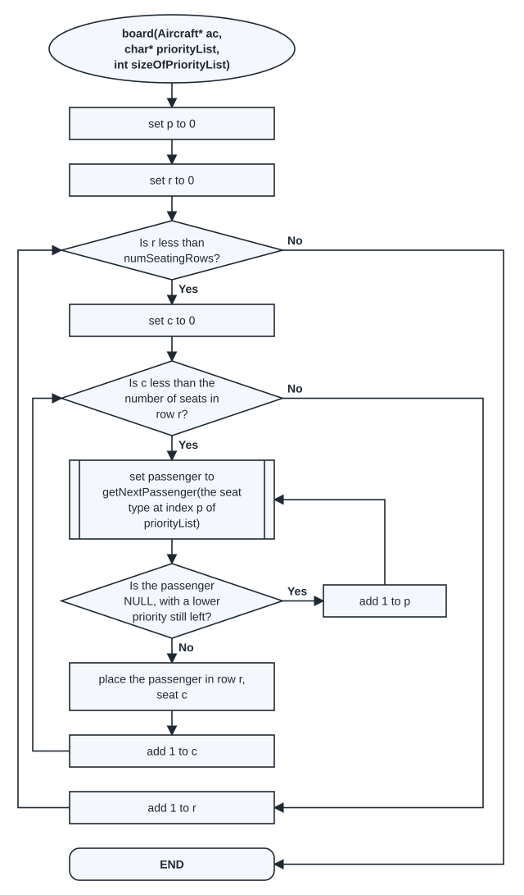
How the chart is built:
- p is the position in
priorityList. It starts at 0, the highest priority. - The outer loop goes over the rows: r goes from 0 while r is less than
numSeatingRows. - The inner loop goes over the seats of row r: c goes from 0 while c is less than
rows[r], the number of seats in that row. - The call to
getNextPassengeris a predefined process, because it calls a function. - If the call gives NULL, that seat type has no passengers left. Add 1 to p and call again with the next seat type. Repeat while it is NULL and p is not yet the last position.
- Place the passenger in row r, seat c. Each step has its own box: no box holds a whole code segment.
| Condition | True means | False means |
|---|---|---|
r < ac->numSeatingRows | there is another row to fill | every row is full: END |
c < ac->rows[r] | row r has another empty seat | row r is full: go to the next row |
next == NULL && p < sizeOfPriorityList - 1 | the passenger (called next in the code) is NULL, and p is not yet the last position: this seat type has no passengers left, so move to the next seat type | a passenger was found (or no lower priority is left): seat the passenger |
The same steps in C++, compiled and run. The chart was checked against this function: each run of the function follows a path through the chart.
void board(Aircraft* ac, char* priorityList, int sizeOfPriorityList) {
int p = 0;
for (int r = 0; r < ac->numSeatingRows; r++) {
for (int c = 0; c < ac->rows[r]; c++) {
Passenger* next = getNextPassenger(priorityList[p]);
while (next == NULL && p < sizeOfPriorityList - 1) {
p++;
next = getNextPassenger(priorityList[p]);
}
ac->passengers[r][c] = next;
}
}
}With 2 F, 3 B and 10 E passengers, priority list F, B, E and rows of 2, 3 and 4 seats, the program prints the seat type in each seat:
row 0: F F row 1: B B B row 2: E E E E
Row 0 takes the two F passengers. The third call for F gives NULL, so p moves to B. Row 1 takes the three B passengers. Then p moves to E for row 2.
Assumed
The paper does not say who allocates each row of passengers. This solution assumes the rows already exist before board runs. The paper does not give getNextPassenger; the program uses a stand-in with a fixed number of passengers of each type.
From past papers · Class Test 2A, 2026, question 2 (5 marks)
Flowchart for the LogisticCompany destructor
Consider the following UML Class diagram that depicts a logistical company system. Note that all the arrays in the UML Class diagram are 1D dynamic arrays of dynamic objects. Answer the questions that follow:
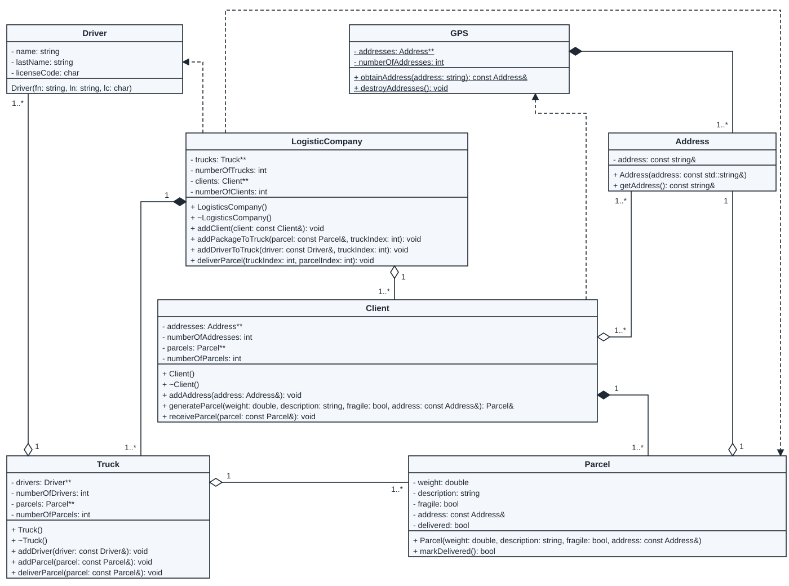
+ generateParcel(weight: double, description: string, fragile: bool, address: const Address&): Parcel&, as drawn here. Class Test 2A prints + generateParcel(weight: double, description: string, fragile: bool, address): const Address&. The constructor and destructor are printed LogisticsCompany [sic], with an extra s.2. Using the UML Class Diagram, as well as the relations and multiplicity indicated on the diagram, design the flowchart for the
LogisticCompanyclass' destructor. All the correct memory should be deallocated. The use of incorrect flowchart notation will result in marks being subtracted.
Write this before you open the solution.
Read the two relations that start at LogisticCompany. A filled diamond (composition) means the owner makes and deletes the other objects. A hollow diamond (aggregation) means it only uses objects that live elsewhere. "1 to 1..*" means one company has one or more of them.
| Relation | What the destructor does |
|---|---|
| Filled diamond to Truck (composition, 1 to 1..*): the company owns its trucks. | Delete each Truck object, then delete the trucks array. |
| Hollow diamond to Client (aggregation, 1 to 1..*): the company only uses its clients. | Delete the clients array only. The Client objects stay alive. |
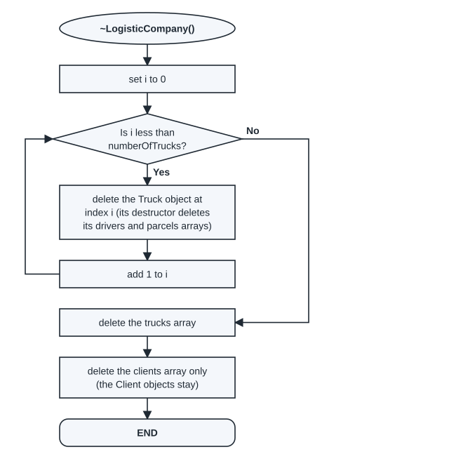
| Condition | True means | False means |
|---|---|---|
i < numberOfTrucks | there is another Truck to delete | every Truck is deleted: delete the arrays |
With two trucks: i = 0: 0 < 2 is true, delete truck 0. i = 1: 1 < 2 is true, delete truck 1. i = 2: 2 < 2 is false, so the loop ends and the two arrays are deleted.
The same steps in C++, compiled and run. The chart was checked against this destructor:
LogisticCompany::~LogisticCompany() {
for (int i = 0; i < numberOfTrucks; i++)
delete trucks[i];
delete[] trucks;
delete[] clients;
}A test program deletes the company first. The client must still be there afterwards, because the company did not own it:
#include <iostream>
#include <string>
#include "LogisticCompany.h"
using namespace std;
int main() {
string street = "12 Long Street";
Address home(street);
Driver thandi("Thandi", "Mokoena", 'C');
Client* client = new Client();
client->addAddress(home);
Parcel& box = client->generateParcel(2.5, "books", false, home);
client->generateParcel(1.0, "vase", true, home);
LogisticCompany* company = new LogisticCompany();
company->addClient(*client);
company->addDriverToTruck(thandi, 0);
company->addPackageToTruck(box, 0);
delete company;
cout << "company deleted: the client still exists" << endl;
delete client;
cout << "client deleted: its two parcels are gone; home and thandi are still in main" << endl;
cout << home.getAddress() << endl;
return 0;
}company deleted: the client still exists client deleted: its two parcels are gone; home and thandi are still in main 12 Long Street
valgrind reports no leak and no invalid read for this program.
Assumed
The Truck destructor deletes its own drivers and parcels arrays, but not the Driver and Parcel objects (both are hollow diamonds). So the company destructor only has to delete each Truck. The company constructor in the test program makes two trucks; the paper does not say how many.
From past papers · Logistics mock test, 2026, question 3 (5 marks)
Flowchart for the Client destructor
Consider the following UML Class diagram depicting a logistics company system. Note that all the arrays in the UML Class diagram are 1D dynamic arrays of dynamic objects. Answer the questions that follow:
The class diagram is the same as in the Class Test 2A question above. It is shown again here.
Using the UML Class Diagram, as well as the relations and multiplicity indicated on the diagram, design the flowchart for the Client class' destructor. All the correct memory should be deallocated. The use of incorrect flowchart notation will result in marks being subtracted. [5 marks]
Upload your solution as a DrawIO (xml) file to the CS Portal->
COS110-> Assignments-> Mock Test Question 3 (https:/ / portal.cs.up.ac.za/ assignments/ view/ 10/ ) Did you submit an answer to the correct location?
True
False
Write this before you open the solution.
| Relation | What the destructor does |
|---|---|
| Filled diamond from Client to Parcel (composition, 1 to 1..*): the client owns its parcels. | Delete each Parcel object, then delete the parcels array. |
| Hollow diamond from Client to Address (aggregation, 1..* to 1..*: a client has one or more addresses, and an address can belong to one or more clients): the client only uses its addresses. | Delete the addresses array only. The Address objects stay alive. |
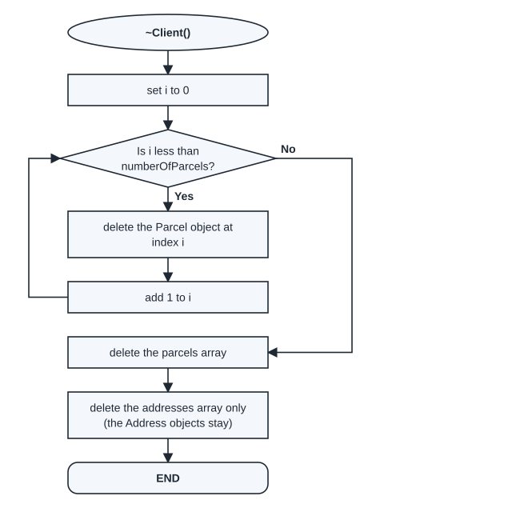
| Condition | True means | False means |
|---|---|---|
i < numberOfParcels | there is another Parcel to delete | every Parcel is deleted: delete the arrays |
With two parcels: i = 0: 0 < 2 is true, delete parcel 0. i = 1: 1 < 2 is true, delete parcel 1. i = 2: 2 < 2 is false, so the loop ends and the two arrays are deleted.
The same steps in C++, compiled and run. The chart was checked against this destructor:
Client::~Client() {
for (int i = 0; i < numberOfParcels; i++)
delete parcels[i];
delete[] parcels;
delete[] addresses;
}The test program gives the client one address and two parcels, then deletes the client:
#include <iostream>
#include <string>
#include "LogisticCompany.h"
using namespace std;
int main() {
string street = "12 Long Street";
Address home(street);
Driver thandi("Thandi", "Mokoena", 'C');
Client* client = new Client();
client->addAddress(home);
Parcel& box = client->generateParcel(2.5, "books", false, home);
client->generateParcel(1.0, "vase", true, home);
LogisticCompany* company = new LogisticCompany();
company->addClient(*client);
company->addDriverToTruck(thandi, 0);
company->addPackageToTruck(box, 0);
delete company;
cout << "company deleted: the client still exists" << endl;
delete client;
cout << "client deleted: its two parcels are gone; home and thandi are still in main" << endl;
cout << home.getAddress() << endl;
return 0;
}company deleted: the client still exists client deleted: its two parcels are gone; home and thandi are still in main 12 Long Street
The address home is still readable after the client is deleted, because the client did not own it. valgrind reports no leak.
From past papers · Logistics mock test, 2026, question 4 (5 marks)
Flowchart for the LogisticCompany destructor (mock)
The class diagram is the one in the Class Test 2A question above.
Using the UML Class Diagram, as well as the relations and multiplicity indicated on the diagram, design the flowchart for the LogisticCompany class' destructor. All the correct memory should be deallocated. The use of incorrect flowchart notation will result in marks being subtracted. [5 marks]
Upload your solution as a DrawIO (xml) file to the CS Portal->
COS110-> Assignments-> Mock Test Question 4 (https:/ / portal.cs.up.ac.za/ assignments/ view/ 11/ ) Did you submit an answer to the correct location?
True
False
Write this before you open the solution.
This is the same task as Class Test 2A question 2. Read the two relations that start at LogisticCompany:
| Relation | What the destructor does |
|---|---|
| Filled diamond to Truck (composition, 1 to 1..*): the company owns its trucks. | Delete each Truck object, then delete the trucks array. |
| Hollow diamond to Client (aggregation, 1 to 1..*): the company only uses its clients. | Delete the clients array only. The Client objects stay alive. |
| Condition | True means | False means |
|---|---|---|
i < numberOfTrucks | there is another Truck to delete | every Truck is deleted: delete the arrays |
With two trucks: i = 0 and i = 1 delete the two Truck objects; at i = 2 the condition is false, and the two arrays are deleted.
LogisticCompany::~LogisticCompany() {
for (int i = 0; i < numberOfTrucks; i++)
delete trucks[i];
delete[] trucks;
delete[] clients;
}company deleted: the client still exists client deleted: its two parcels are gone; home and thandi are still in main 12 Long Street
From past papers · Semester Test 1, 2026, question 3 (0.5 marks)
How many classes are in the object diagram?
MULTIPLE CHOICE
Given the following Object Diagram (Figure 1), select how many classes can be derived from the diagram:
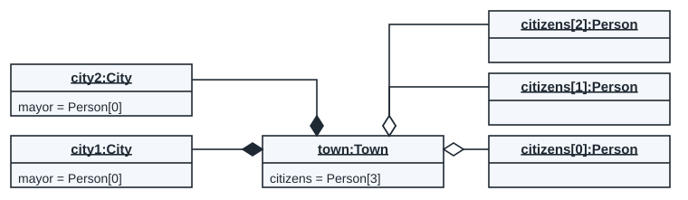
- 5
- 4
- 3
- 6
Write this before you open the solution.
C. 3. In an object diagram each box is named objectName:ClassName. Count the different names after the colon:
| Objects | Class |
|---|---|
| city1, city2 | City |
| town | Town |
| citizens[0], citizens[1], citizens[2] | Person |
Six objects, but only three classes. Answer D counts the objects, not the classes.
A program with these three classes compiles and makes the same objects:
3 classes: City, Town and Person
From past papers · Semester Test 1, 2026, questions 15 and 16 (3 marks each)
The class and its constructor, from Figure 3 and Figure 4
The test page does not show the scenario or the figures, so they are taken from the Intervention Session 3 slides (slides 13 and 14), which restate the question.
Assume there is an anonymous class. Its constructor builds an object of that class from an existing array of values. The flowchart (Figure 3) shows the logic that the constructor must follow, and the incomplete object diagram (Figure 4) shows an object of the class.
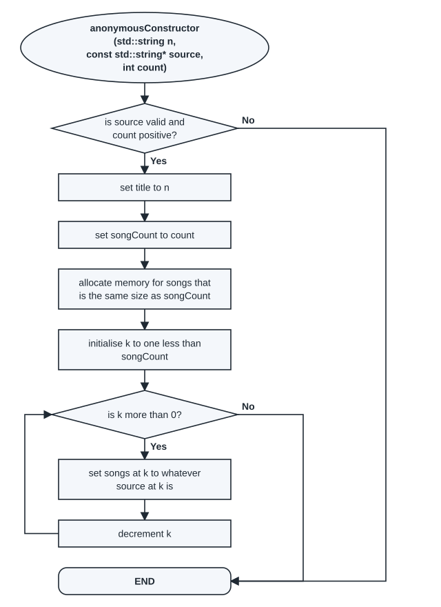
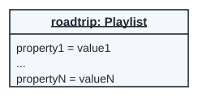
15 ESSAY
Provide the full class definition for the class. Hint: The class needs to make appropriate use of dynamic memory and is responsible for deallocating any dynamic memory.
16 ESSAY
Implement the constructor for the class, based on Figure 3. Be sure to validate the parameter values, and do not perform any initialisation if a parameter is invalid.
Question 15 is worth 3 marks and question 16 is worth 3 marks.
Write this before you open the solution.
An anonymous class is a class whose name is not given in the question. Figure 4 gives the name.
Question 15. Take each part of the class from one of the two figures:
| From | What it gives |
|---|---|
Figure 4: roadtrip: Playlist | The class name is Playlist. |
| Figure 3: the start box | The constructor parameters: std::string n, const std::string* source, int count. |
| Figure 3: "set title to n" | A member title of the type of n: std::string. |
| Figure 3: "set songCount to count" | A member songCount of type int. |
| Figure 3: "allocate memory for songs ..." and "set songs at k to whatever source at k is" | A member songs that holds a dynamic array of strings: std::string*. |
| The hint: "responsible for deallocating" | A destructor that deletes the songs array. |
#ifndef PLAYLIST_H
#define PLAYLIST_H
#include <string>
class Playlist {
public:
Playlist(std::string n, const std::string* source, int count);
~Playlist();
private:
std::string title;
int songCount;
std::string* songs;
};
#endifQuestion 16. One C++ line for each box of Figure 3:
Playlist::Playlist(std::string n, const std::string* source, int count) {
if (source == NULL || count <= 0)
return;
title = n;
songCount = count;
songs = new std::string[songCount];
for (int k = songCount - 1; k > 0; k--)
songs[k] = source[k];
}| Condition | True means | False means |
|---|---|---|
source == NULL || count <= 0 | a parameter is invalid: return at once, with no initialisation | both are valid: set the members |
k > 0 | copy the song at index k | the loop ends |
The flowchart says "is k more than 0?", so the loop stops before k reaches 0. Index 0 is never copied. A run with the three songs Road, Rain and Sun shows this:
title = Trip, songCount = 3 songs[0] = "" songs[1] = "Rain" songs[2] = "Sun"
Pass by pass, with songCount = 3: k starts at 2. k = 2: 2 > 0 is true, copy Sun. k = 1: 1 > 0 is true, copy Rain. k = 0: 0 > 0 is false, so the loop ends. Road (index 0) is never copied.
This follows Figure 3 as printed. To copy every song, the question would need "k is 0 or more" (k >= 0).
Assumed
The memo is not available. Three points are open: (1) whether a full answer also needs a copy constructor and an assignment operator, since the class owns dynamic memory; (2) the order of members in the class; (3) the invalid case. With no initialisation, songs holds no set value, and the destructor would then delete an unset pointer. The paper asks for no initialisation, so the solution follows it. In your own code, setting songs to NULL first avoids the problem.
From past papers · Semester Test 1, 2026, question 23 (7 marks)
Flowchart for the Universe assignment operator
[Co]nsider the following partially complete UML Class Diagram (Figure 5):
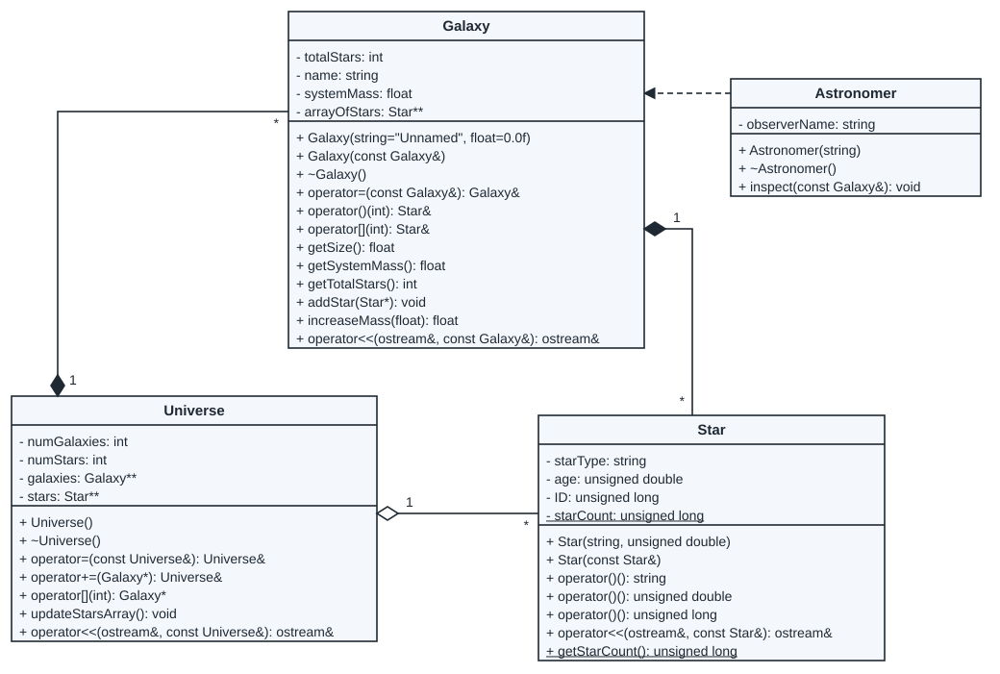
unsigned double [sic] is printed in Star; it is not a C++ type. Star also has three operator()() lines that differ only in the return type, as printed.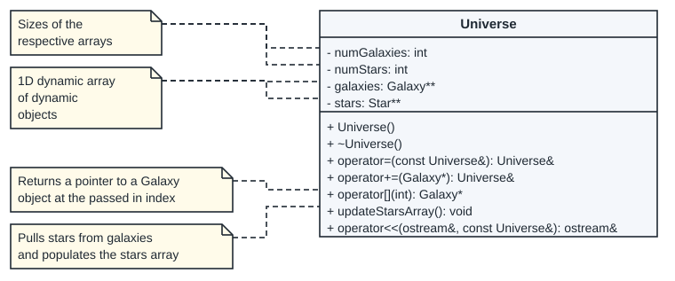
23 TRUE/
FALSE Using a flowchart, design the algorithm for the assignment operator such that no memory is leaked, the correct members are re-populated, and copied over. Note that the placement of only code statements or the use of incorrect notation in your flowchart will result in marks being deducted. [7 marks]
The drawing software can be accessed at the following link: https:/
/ portal.cs.up.ac.za/ draw/ (https:/ / portal.cs.up.ac.za/ draw/ ) Upload your solution as a DrawIO (xml) file to the CS Portal->
COS110-> Assignments-> Semester Test 1 Q23 (https:/ / portal.cs.up.ac.za/ assignments/ view/ 12/ (https:/ / portal.cs.up.ac.za/ assignments/ view/ 12/ )) Did you submit an answer to the correct location?
Yes
The first letters of "Consider" are cut off on the scan. The question does not name the class; Figure 6 shows only Universe, so it is the Universe assignment operator.
Write this before you open the solution.
Read the three relations at Universe in Figure 5:
| Relation | What operator= does with it |
|---|---|
| Universe owns its galaxies (filled diamond). | Delete each old Galaxy and the old array. Then make a new copy of each Galaxy of the other universe: a deep copy, which means a new object for each one, not a copy of the pointer. |
| Universe has its stars (hollow diamond); the Galaxy objects own the stars. | Delete only the old stars array. Then fill a new one from the new galaxies with updateStarsArray() (Figure 6). |
| numGalaxies and numStars are the sizes (Figure 6). | Copy numGalaxies; updateStarsArray sets numStars. |
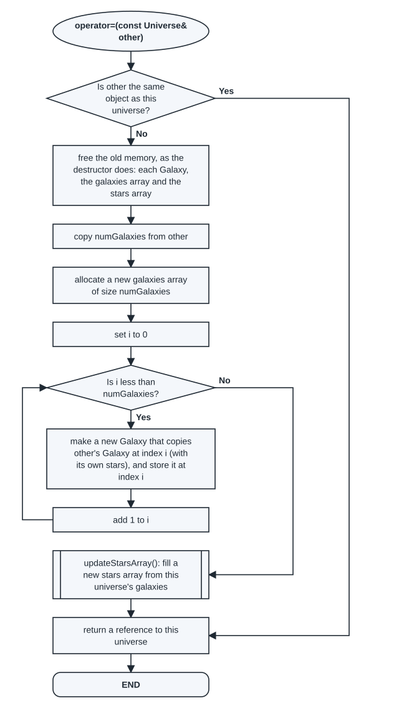
| Condition | True means | False means |
|---|---|---|
this == &other | the object is assigned to itself (v = v): change nothing | free the old memory, then copy |
i < numGalaxies | copy the next Galaxy | every Galaxy is copied: rebuild the stars array |
For v = u, where u has 2 galaxies: i = 0: 0 < 2 is true, copy G1. i = 1: 1 < 2 is true, copy G2. i = 2: 2 < 2 is false, so the loop ends and updateStarsArray() fills the stars array.
The self-assignment check comes first. Without it, v = v would delete the galaxies and then try to copy them from the deleted memory.
The same steps in C++, compiled and run. The chart was checked against this function, for v = u and for v = v:
Universe& Universe::operator=(const Universe& other) {
if (this == &other)
return *this;
for (int i = 0; i < numGalaxies; i++)
delete galaxies[i];
delete[] galaxies;
delete[] stars;
stars = NULL;
numStars = 0;
numGalaxies = other.numGalaxies;
galaxies = new Galaxy*[numGalaxies];
for (int i = 0; i < numGalaxies; i++)
galaxies[i] = new Galaxy(*other.galaxies[i]);
updateStarsArray();
return *this;
}#include <iostream>
#include "Universe.h"
using namespace std;
int main() {
Universe u;
u += new Galaxy("G1");
u += new Galaxy("G2");
u[0]->addStar(new Star("AX1", 100));
u[1]->addStar(new Star("BF1", 476237));
u.updateStarsArray();
Universe v;
v += new Galaxy("Old");
v[0]->addStar(new Star("OLD", 5));
v.updateStarsArray();
v = u;
v = v;
u[0]->addStar(new Star("AP2", 2333));
cout << "u after adding AP2 to u's G1:" << endl << u << endl;
cout << "v (its own copies, so no AP2):" << endl << v << endl;
return 0;
}u after adding AP2 to u's G1:
Universe:
Galaxy G1 is at index 0/2:
Star at index 0/2: AX1 (ID=1)
Star at index 1/2: AP2 (ID=4)
Galaxy G2 is at index 1/2:
Star at index 0/1: BF1 (ID=2)
Stars:
Star at index 0/2: AX1 (ID=1)
Star at index 1/2: BF1 (ID=2)
v (its own copies, so no AP2):
Universe:
Galaxy G1 is at index 0/2:
Star at index 0/1: AX1 (ID=1)
Galaxy G2 is at index 1/2:
Star at index 0/1: BF1 (ID=2)
Stars:
Star at index 0/2: AX1 (ID=1)
Star at index 1/2: BF1 (ID=2)Adding AP2 to u after v = u does not change v, because v has its own copies. valgrind reports no leak and no invalid read.
Assumed
The paper does not give the Galaxy copy constructor. This solution assumes it makes a new copy of each Star, and that a copied Star keeps the ID of the star it copies.
From past papers · Semester Test 1, 2026, question 24
Every object after line 13
This question uses Figures 5 and 6 of question 23 above.
24 TRUE/
FALSE Given the following main function (line numbers are provided only for reference purposes):
1. int main(){
2. Universe u;
3. u += new Galaxy("G1");
4. u += new Galaxy("G2", 200f);
5. u[0]->addStar(new Star("AX1", 100));
6. u[1]->addStar(new Star("BF1", 476237));
7. u[0]->addStar(new Star("AP2", 2333));
8. Astronomer a("Buzz");
9. a.inspect(*u[1]);
10. u.updateStarsArray();
11. u[0]->addStar(new Star("AF5", 2389));
12. cout << "Star Count:" << Star::getStarCount() << endl;
13. cout << u << endl; //after this line
14. return 0;
15. }As printed on the paper. 200f [sic] on line 4 is not a valid C++ number; 200.0f is.
Which produced the following output:
Buzz sees galaxy 'G2' with 1 stars, and a mass of 0
Star Count: 4
Universe:
Galaxy G1 is at index 0/2:
Star at index 0/3: AX1 (ID=1)
Star at index 1/3: AP2 (ID=3)
Star at index 2/3: AF5 (ID=4)
Galaxy G2 is at index 1/2:
Star at index 0/1: BF1 (ID=2)
Stars:
Star at index 0/3: AX1 (ID=1)
Star at index 1/3: AP2 (ID=3)
Star at index 2/3: BF1 (ID=2)Draw the object diagram of all the objects that exist after line 13 in the main function has finished executing. [[unreadable in the source] marks]
The drawing software can be accessed at the following link: https:/
/ portal.cs.up.ac.za/ draw/ Upload your solution as a DrawIO (xml) file to the CS Portal->
COS110-> Assignments-> Semester Test Q24 (https:/ / portal.cs.up.ac.za/ assignments/ view/ 13/ ) Did you submit an answer to the correct location?
Yes
The mark is printed as [8 marks] or [3 marks]; the digit cannot be read on the scan.
Write this before you open the solution.
![Object diagram after line 13. u: Universe (numGalaxies = 2, numStars = 3, galaxies = Galaxy[2], stars = Star[3]) owns galaxies[0]: Galaxy (totalStars = 3, name = "G1", systemMass = 0, arrayOfStars = Star[3]) and galaxies[1]: Galaxy (totalStars = 1, name = "G2", systemMass = 0, arrayOfStars = Star[1]). galaxies[0] owns three Star objects: AX1 (age 100, ID 1), AP2 (age 2333, ID 3) and AF5 (age 2389, ID 4). galaxies[1] owns BF1 (age 476237, ID 2). Each Star shows the static starCount = 4. Hollow diamonds from u: stars[0] to AX1, stars[1] to AP2, stars[2] to BF1. a: Astronomer (observerName = "Buzz") stands alone.](assets/diagrams/pp_od_st1_q24.svg)
How each part of the diagram follows from the code and the output:
- Two objects on the stack:
u(line 2) anda(line 8).ahas no link to anything:inspectonly used the galaxy during line 9. - The galaxies: lines 3 and 4 add G1 and G2, so
galaxies = Galaxy[2]. The output says G2 has "a mass of 0", so systemMass is 0 for both, even though line 4 passes 200. - The stars and their IDs: the IDs follow the order of creation: AX1 is 1, BF1 is 2, AP2 is 3, AF5 is 4. starCount is static, so it is one value, 4, shared by all stars. Draw it underlined in each Star box.
- The stars array of u:
updateStarsArray()ran on line 10, before AF5 was added on line 11. Sostarsholds 3 pointers: AX1, AP2 and BF1. It does not point at AF5, andnumStars = 3. - Links: filled diamonds where an object owns another (u owns the galaxies; a galaxy owns its stars). Hollow diamonds from u to the three stars it points at but does not own.
The run that gave these values (line 4 changed to 200.0f, so that it compiles):
#include <iostream>
#include "Universe.h"
#include "Astronomer.h"
using namespace std;
int main(){
Universe u;
u += new Galaxy("G1");
u += new Galaxy("G2", 200.0f);
u[0]->addStar(new Star("AX1", 100));
u[1]->addStar(new Star("BF1", 476237));
u[0]->addStar(new Star("AP2", 2333));
Astronomer a("Buzz");
a.inspect(*u[1]);
u.updateStarsArray();
u[0]->addStar(new Star("AF5", 2389));
cout << "Star Count:" << Star::getStarCount() << endl;
cout << u << endl; //after this line
return 0;
}Buzz sees galaxy 'G2' with 1 stars, and a mass of 0
Star Count:4
Universe:
Galaxy G1 is at index 0/2:
Star at index 0/3: AX1 (ID=1)
Star at index 1/3: AP2 (ID=3)
Star at index 2/3: AF5 (ID=4)
Galaxy G2 is at index 1/2:
Star at index 0/1: BF1 (ID=2)
Stars:
Star at index 0/3: AX1 (ID=1)
Star at index 1/3: AP2 (ID=3)
Star at index 2/3: BF1 (ID=2)The program prints Star Count:4, with no space, because line 12 has no space after the colon. The paper's output shows Star Count: 4, with a space. This difference does not change the object diagram: the count is 4 either way.
Assumed
The paper does not give the Galaxy and Star code. The solution assumes: the Galaxy constructor does not store its float parameter (the paper's output gives a mass of 0 for G2); each new Star takes the next ID; the static count goes up by one for each new Star. These give the output printed on the paper.
From past papers · Semester Test 2, 2026, question 9(c) (5 marks)
The object diagram of arr
8. Given the following class in the class diagram, answer the questions that follow.
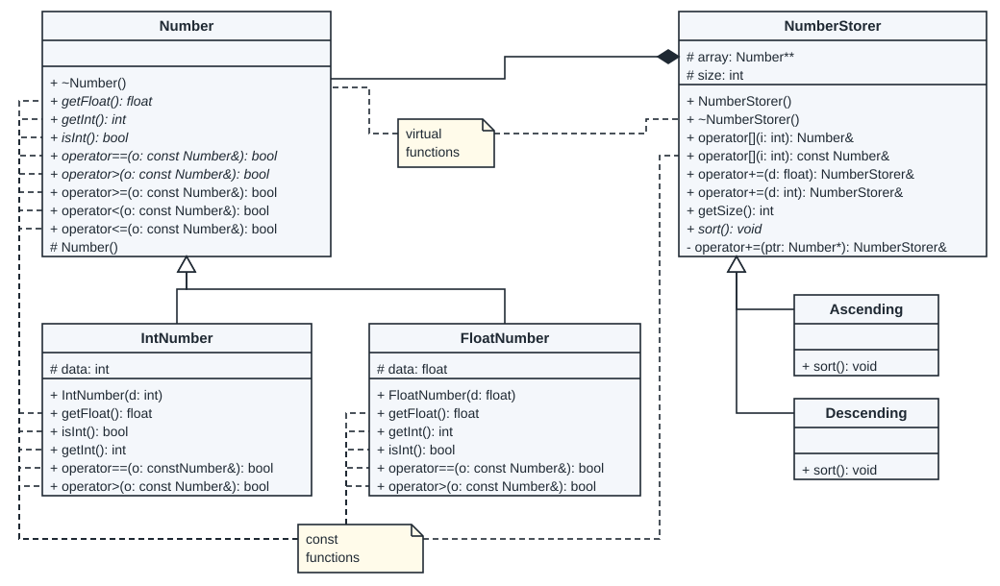
constNumber& [sic] is printed with no space in IntNumber.9. Consider the stream insertion operator is added to the
NumberStorerclass, and used as shown in the code sample below.
1 struct NumberStorerArray{
2 NumberStorer** array; //uses a relation
3 int size;
4 };
5
6 void populateStorer(NumberStorer& ns){
7 ns += 5;
8 ns += 0.5f;
9 ns += 2.5f;
10 ns.sort();
11 }
12
13 int main(){
14 NumberStorerArray arr;
15 arr.array = new NumberStorer*[2];
16 arr.size = 2;
17 arr.array[0] = new Ascending();
18 arr.array[1] = new Descending();
19 for(int i=0; i < 2; i++){
20 arr.array[i]->sort();
21 cout << (*arr.array[i]) << endl;
22 }
23 return 0;
24 }As printed on the paper.
The output produced by the above program is:
[0.5,2.5,5] [5,2.5,0.5]
Answer the following questions.
[...]
(c) Draw the object diagram for the variable
arr, after the for loop has finished executing, but before the return statement. (5)
Parts (a) and (b) ask about the stream insertion operator; only part (c) is a diagram question.
Write this before you open the solution.
First, a problem in the paper. main as printed never calls populateStorer. Run as printed, the two storers stay empty:
[] []
The printed output shows three values in each storer, so the solution assumes the loop calls populateStorer(*arr.array[i]); first:
for(int i=0; i < 2; i++){
populateStorer(*arr.array[i]);
arr.array[i]->sort();
cout << (*arr.array[i]) << endl;
}[0.5,2.5,5] [5,2.5,0.5]
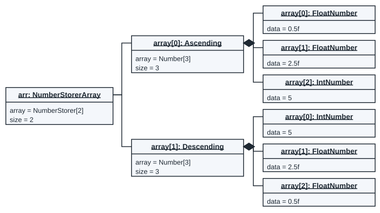
- Class names: each box shows the class of the object made with
new, not the pointer type.array[0]is a NumberStorer pointer, but the object is an Ascending, so the box saysAscending. In the same way,ns += 5makes an IntNumber andns += 0.5fmakes a FloatNumber. - The loop: i = 0 fills the Ascending storer and sorts it, then prints it. i = 1 does the same for the Descending storer. At i = 2 the condition
i < 2is false and the loop ends. - Order: each storer gets 5, 0.5f and 2.5f, then sorts. Ascending holds 0.5f, 2.5f, 5; Descending holds 5, 2.5f, 0.5f. The output lines show the same orders.
- Links: line 2 of the code says
//uses a relation, so arr joins the two storers with plain lines (association). Each storer owns its Number objects (the filled diamond in the class diagram).
valgrind reports a leak for this program, because the paper's main never deletes the storers:
208 (16 direct, 192 indirect) bytes in 1 blocks are definitely lost in loss record 7 of 7
Assumed
The paper's main never calls populateStorer; the solution assumes the loop calls it first, to match the printed output. The paper does not give the NumberStorer code. The solution assumes each += adds one new object at the end of the array, and that sort() reorders the pointers.
From past papers · Class Test 3, 2026, question 2
The object diagram of ns
Listing 1: Provided Classes. The listing below is the paper's listing. The compiled copy also has an include guard and #include <iostream> (not shown). "Comparisions" [sic] is in the original.
class Number{
public:
virtual ~Number();
virtual float getFloat() const = 0; //returns the value as a float.
virtual int getInt() const = 0; //returns the value as an int.
virtual bool isInt() const = 0; //returns true if the object is an IntNumber.
//Comparisions are performed based on the data of the objects
virtual bool operator==(const Number& o) const = 0;
virtual bool operator>(const Number& o) const = 0;
bool operator>=(Number& o) const;
bool operator<(Number& o) const;
bool operator<=(Number& o) const;
protected:
Number();
};
class IntNumber: public Number{
public:
IntNumber(int d);
float getFloat() const;
int getInt() const;
bool isInt() const;
bool operator==(const Number& o) const;
bool operator>(const Number& o) const;
protected:
int data;
};
class FloatNumber: public Number{
public:
FloatNumber(float d);
float getFloat() const;
int getInt() const;
bool isInt() const;
bool operator==(const Number& o) const;
bool operator>(const Number& o) const;
protected:
float data;
};
class NumberStorer{
public:
NumberStorer();
virtual ~NumberStorer();
Number& operator[](int i); //retrieves the ith Number
const Number& operator[](int i) const; //retrieves the ith Number
NumberStorer& operator+=(float d); //Adds the parameter to the NumberStorer object
NumberStorer& operator+=(int d); //Adds the parameter to the NumberStorer object
int getSize() const; //returns the size.
virtual void sort() = 0; //sorts the Numbers.
protected:
Number** array; //1D array of owned dynamic Number pointers.
int size; //size of the array
private:
NumberStorer& operator+=(Number* ptr); //resizes the array and appends the pointer.
};
class Ascending: public NumberStorer{
public:
void sort(); //sorts the Numbers ascendingly
};
class Descending: public NumberStorer{
public:
void sort(); //sorts the Numbers descendingly
};
std::ostream& operator<<(std::ostream& out, const NumberStorer& ns);2. Consider the following
mainprogram. Provide the UML Object Diagram for thensobject after line 8 has finishe[d]
executing.
1 int main(){
2 Ascending ns;
3 ns += 5;
4 ns += 0.5f;
5 ns += 2.5f;
6 ns += 3;
7 ns.sort();
8 cout << ns << endl; //After this line
9 return 0;
10 }As printed on the paper.
The output produced by the above program is:
[0.5,2.5,3,5]
The last letter of "finished" is cut off on the photo. No marks are visible.
Write this before you open the solution.
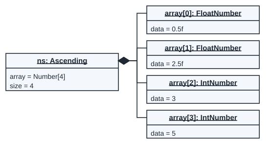
nsis an Ascending object. Its members come from NumberStorer:arrayandsize.- Lines 3 to 6 add four numbers, so
size = 4. An int argument makes an IntNumber; a float argument (with f) makes a FloatNumber. - Line 7 sorts them from small to large: 0.5f, 2.5f, 3, 5. The output line shows the same order.
- ns owns the Number objects (the listing says "owned dynamic Number pointers"), so each link has a filled diamond at ns.
#include <iostream>
#include "Numbers.h"
using namespace std;
int main(){
Ascending ns;
ns += 5;
ns += 0.5f;
ns += 2.5f;
ns += 3;
ns.sort();
cout << ns << endl; //After this line
return 0;
}[0.5,2.5,3,5]
Assumed
The paper does not give the NumberStorer code. The solution assumes each += adds one new object at the end, and that sort() reorders the pointers.
From past papers · Intervention Test, 14 September 2026, question 2
From a recursive flowchart to code
2. An anonymous function's logic is depicted using the flowchart below. Answer the questions that follow.
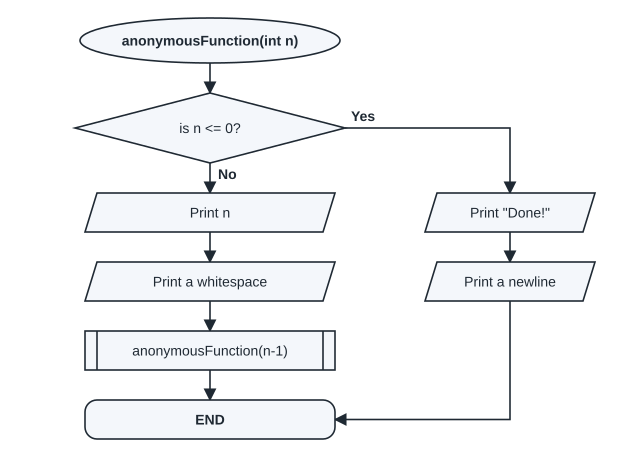
(a) The function is invoked as follows:
recurse(5);.
Give the function signature.(b) Provide the implementation of the function, and say what it does in one sentence.
The chart names the function anonymousFunction, but part (a) calls it recurse. No marks are printed.
Write this before you open the solution.
(a) void recurse(int n). The chart takes one int, n. It prints but never returns a value, so the return type is void. The name comes from the call in (a).
(b) One line of code for each box. A predefined process box (with double side bars) stands for a call to a function. Here, anonymousFunction(n-1) becomes the recursive call recurse(n - 1):
void recurse(int n) {
if (n <= 0) {
cout << "Done!";
cout << endl;
} else {
cout << n;
cout << " ";
recurse(n - 1);
}
}| Condition | True means | False means |
|---|---|---|
n <= 0 | print "Done!" and a newline; the calls stop here | print n and a space, then call recurse(n - 1) |
| Call | Is n <= 0? | Prints |
|---|---|---|
| recurse(5) | No | 5 and a space |
| recurse(4) | No | 4 and a space |
| recurse(3) | No | 3 and a space |
| recurse(2) | No | 2 and a space |
| recurse(1) | No | 1 and a space |
| recurse(0) | Yes | Done! and a newline |
5 4 3 2 1 Done!
In one sentence: it prints the numbers from n down to 1, each followed by a space, and then "Done!".
The chart was checked against this function: the run of recurse(5) follows the No path five times and the Yes path once.
From past papers · EO1 2023, question 1.2 (2 marks)
Connect each pointer to its value (2023)
1.2 Given the code segment, connect each variable's resulting value, using an arrow, to the most appropriate value on the right.
1 int* ptrA = new int(5); 2 int* ptrB = new int(6); 3 int* ptrC = ptrA; 4 ptrA = ptrB; 5 int* ptrD = ptrB; 6 ptrB = NULL;
As printed on the paper.
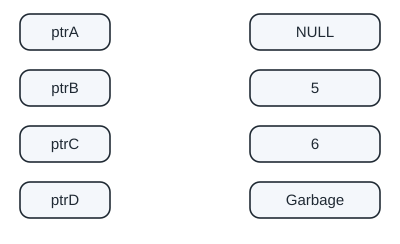
Write this before you open the solution.
| Line | What happens | ptrA | ptrB | ptrC | ptrD |
|---|---|---|---|---|---|
| 1 | new int holding 5 | 5 | - | - | - |
| 2 | new int holding 6 | 5 | 6 | - | - |
| 3 | ptrC copies the address in ptrA | 5 | 6 | 5 | - |
| 4 | ptrA now points where ptrB points | 6 | 6 | 5 | - |
| 5 | ptrD copies the address in ptrB | 6 | 6 | 5 | 6 |
| 6 | ptrB is set to NULL; the 6 is still there | 6 | NULL | 5 | 6 |
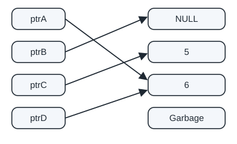
Copying a pointer copies the address, not the int. Line 6 changes only ptrB; ptrA and ptrD still point at the 6. A program that prints each value:
#include <iostream>
using namespace std;
int main() {
int* ptrA = new int(5);
int* ptrB = new int(6);
int* ptrC = ptrA;
ptrA = ptrB;
int* ptrD = ptrB;
ptrB = NULL;
cout << "ptrA -> " << *ptrA << endl;
cout << "ptrB -> " << (ptrB == NULL ? "NULL" : "not NULL") << endl;
cout << "ptrC -> " << *ptrC << endl;
cout << "ptrD -> " << *ptrD << endl;
delete ptrC;
delete ptrD;
return 0;
}ptrA -> 6 ptrB -> NULL ptrC -> 5 ptrD -> 6
From past papers · EO1 2024, question 1.1 (2 marks)
Connect each pointer to its value (2024)
1.1 Given the code segment, connect each variable's resulting value, using an arrow, to the most appropriate value on the right.
1 int* ptrA = new int(5); 2 int* ptrB = ptrA; 3 int* ptrC = new int(6); 4 ptrA = ptrC; 5 int* ptrD = ptrB; 6 ptrB = NULL; 7 delete ptrD;
As printed on the paper.
Write this before you open the solution.
| Line | What happens | ptrA | ptrB | ptrC | ptrD |
|---|---|---|---|---|---|
| 1 | new int holding 5 | 5 | - | - | - |
| 2 | ptrB copies the address in ptrA | 5 | 5 | - | - |
| 3 | new int holding 6 | 5 | 5 | 6 | - |
| 4 | ptrA now points where ptrC points | 6 | 5 | 6 | - |
| 5 | ptrD copies the address in ptrB (the 5) | 6 | 5 | 6 | 5 |
| 6 | ptrB is set to NULL | 6 | NULL | 6 | 5 |
| 7 | the int that ptrD points at (the 5) is deleted | 6 | NULL | 6 | Garbage |
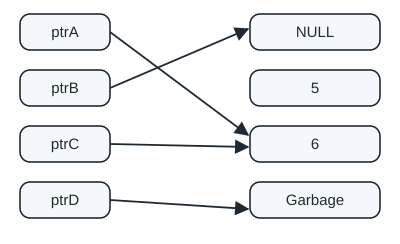
After line 7, ptrD still holds the old address, but that memory is no longer the program's: reading it gives an unknown value (Garbage). The 5 is the value that was deleted, so ptrD does not point at 5. A program that prints each value:
#include <iostream>
using namespace std;
int main() {
int* ptrA = new int(5);
int* ptrB = ptrA;
int* ptrC = new int(6);
ptrA = ptrC;
int* ptrD = ptrB;
ptrB = NULL;
delete ptrD;
cout << "ptrA -> " << *ptrA << endl;
cout << "ptrB -> " << (ptrB == NULL ? "NULL" : "not NULL") << endl;
cout << "ptrC -> " << *ptrC << endl;
cout << "ptrD -> deleted memory (Garbage)" << endl;
delete ptrC;
return 0;
}ptrA -> 6 ptrB -> NULL ptrC -> 6 ptrD -> deleted memory (Garbage)
A second program reads *ptrD after the delete. It prints a value that cannot be predicted, and valgrind reports the read:
delete ptrD;
cout << "ptrA -> " << *ptrA << endl;
cout << "ptrB -> " << (ptrB == NULL ? "NULL" : "not NULL") << endl;
cout << "ptrC -> " << *ptrC << endl;
cout << "ptrD -> " << *ptrD << endl;Invalid read of size 4
From past papers · EO2 2024, question 6.3 (3 marks)
What does modify() do to the list?
Question 6 6 ........................................ (12 marks)
Consider the following singly linked list class and node struct:
1 struct Node{
2 float data;
3 Node* next;
4 Node(float d, Node* n) : data(d), next(n) {}
5 };
6 class List{
7 private:
8 Node* head;
9 public:
10 List();
11 ~List();
12 friend istream &operator>>(istream& in, List& list);
13 friend ostream &operator<<(ostream& in, List& list);
14 int countOccurrences(float val) const;
15 };As printed on the paper. Line 13 names the ostream& parameter in [sic].
6.3 Suppose the following function was added to the
Listclass:
void modify() {
Node* current = head;
Node* prev = NULL;
Node* temp;
while (current != NULL) {
temp = current->next;
current->next = prev;
prev = current;
current = temp;
}
head = prev;
}As printed on the paper.
Consider the following
mainfunction, which includes a call to themodifyfunction. The assumption is that the input and output operators have been correctly overloaded to prepend values and print all elements starting from theheadnode, respectively. Assume that the user enters 2, 4, and 6 as keyboard inputs.
int main() {
List list;
cin >> list; // 2 is entered on the keyboard;
cin >> list; // 4 is entered on the keyboard;
cin >> list; // 6 is entered on the keyboard;
list.modify();
cout << list;
return 0;
}As printed on the paper.
What will be the output of the program above?
Question 6.3 is worth 3 marks. The page header says "Examination Opportunity 1" [sic], on the EO2 paper of 25 October 2024.
Write this before you open the solution.
Step 1: the list before modify. Each input is prepended (added at the front). 2 goes in first, then 4 goes in front of it, then 6 goes in front of that. So the list is 6, 4, 2:
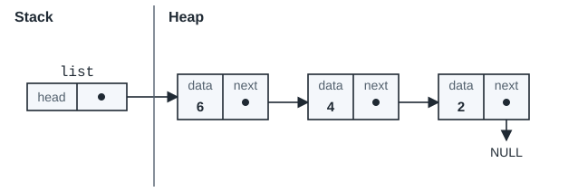
Step 2: trace the loop. Each pass turns one next pointer around, so it points back at the node before it. The four lines of the loop body, in pass 1 (current is node 6, prev is NULL):
temp = current->next;temp keeps node 4, the rest of the list, so it is not lost.current->next = prev;node 6 now points back at prev, which is NULL.prev = current;prev moves to node 6.current = temp;current moves to node 4.
Passes 2 and 3 do the same for nodes 4 and 2. The table shows the pointers at the end of each pass:
| Condition | True means | False means |
|---|---|---|
current != NULL | there is another node to turn around | every node is turned: set head to prev |
| Pass | prev | current | Where each next pointer points |
|---|---|---|---|
| 1 | 6 | 4 | 6 → NULL, 4 → 2, 2 → NULL |
| 2 | 4 | 2 | 6 → NULL, 4 → 6, 2 → NULL |
| 3 | 2 | NULL | 6 → NULL, 4 → 6, 2 → 4 |
After the loop, prev points at node 2, the last node of the old list. head = prev; makes it the first node:
Answer: the output is 2 4 6. modify() reverses the list.
A run of the same code. A string stream stands in for the keyboard, and the program also prints the list once before modify():
int main() {
istringstream keyboard("2 4 6"); // stands in for cin: the user enters 2, 4 and 6
List list;
keyboard >> list;
keyboard >> list;
keyboard >> list;
cout << list;
list.modify();
cout << list;
return 0;
}6 4 2 2 4 6
Assumed
The paper does not give the output operator. The solution assumes it prints each value followed by a space, as the program above does. The exact spacing in the memo is not known.